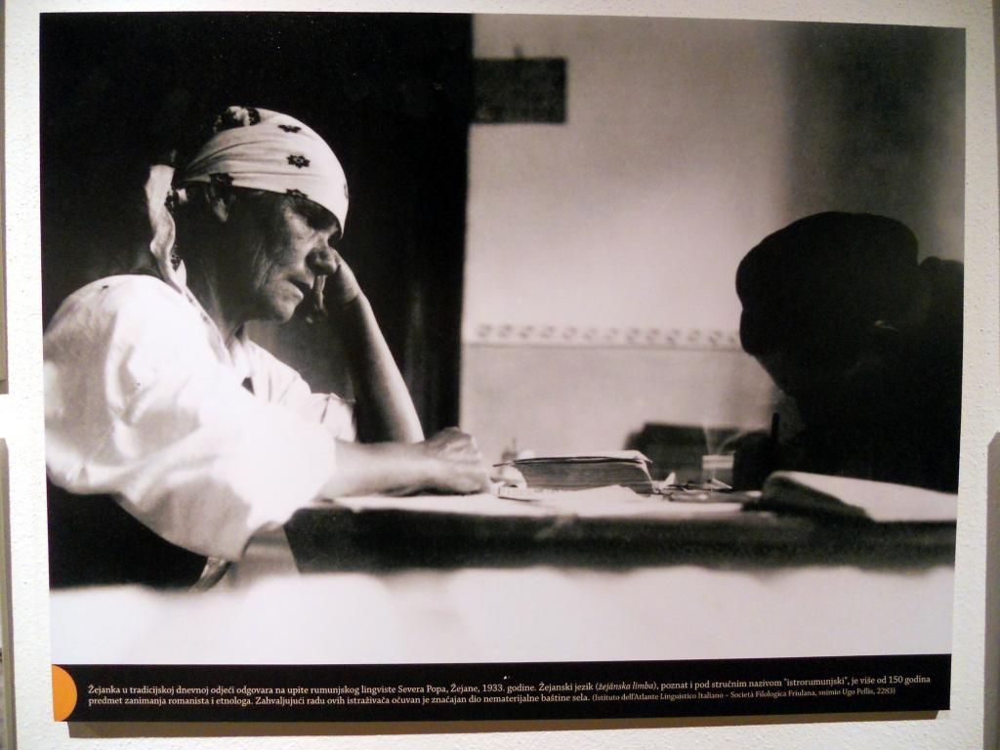
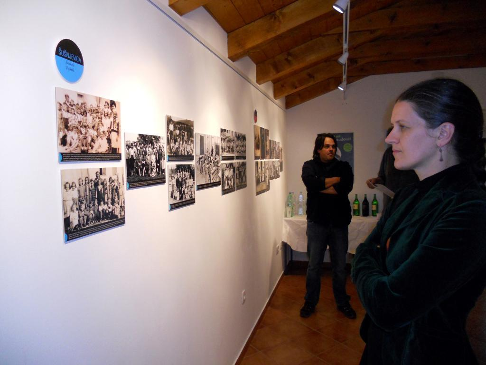
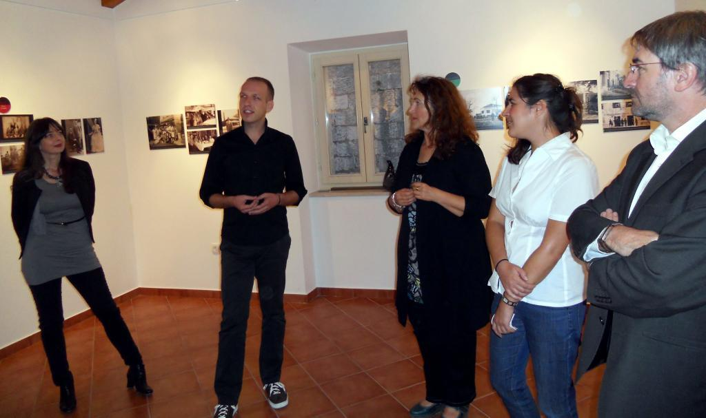

Fotografija Žejanke u tradicijskoj dnevnoj odjeći kako odgovara na upite rumunjskog lingviste Severa Popa iz 1933. godine jedna je od stotinjak s izložbe "Neka nu me uci…" (Da me ne zaboraviš…), otvorene u pićanskom Centru za nematerijalnu kulturu Istre (CENKI).
 Snimke izabrane iz digitalne arhive projekta "Očuvanje vlaškog i žejanskog jezika" prikazuju svakodnevicu tipično istarske, a opet, zahvaljujući govornoj posebnosti, sasvim osebujne zajednice Šušnjevice i sela oko Čepićkog polja, te Žejana, i to tijekom prvih šest desetljeća 20. stoljeća.
Jezik znanstveno poznat kao istrorumunjski više od 150 godina predmet je zanimanja romanista i etnologa. Procjenjuje da ga u nas koristi 200-tinjak govornika, uz one pasivne, koji ga razumiju, ali ne i pričaju.
"Većina fotografija, naročito one snimljene nakon Drugog svjetskog rata, amaterske su, iz obiteljskih albuma naših kazivača. Njihova spontanost bez dvojbe ukazuje na važnost zabilježenih trenutaka u životu pojedinaca, obitelji i mjesta," zapisali su u pratećem letku autori izložbe lingvistica dr. sc. Zvjezdana Vrzić, ujedno voditeljica projekta "Očuvanje vlaškog i žejanskog jezika," te Viviana Brkarić iz udruge "Spod Učke" i Robert Doričić iz udruge "Žejana". Veći dio opisa fotografija rezultat je razgovora s mještanima, pa njih smatramo stvarnim autorima ovog postava, dodaju.
 Oba područja oslikana su kroz cjeline "naše selo nekad i sad," "svakodnevni poslovi," "proslave," "u školi," "u svijetu".
- Simpatičan je taj niz dvojnosti izložbe: uz pogled izvana stručnjaka iz instituta koji su se bavili tradicijskom arhitekturom, odnosno lingvistikom između dva rata, pružen nam je i onaj iznutra, dakle mještana na sebe same i njihovu svakodnevicu. Čitave životne priče vrte se kroz ove fotografije, primijetila je Lidija Nikočević, ravnateljica Etnografskog muzeja Istre, pod čijom kapom djeluje CENKI.
 Otvarajući izložbu, županijski pročelnik za kulturu Vladimir Torbica napomenuo je da je zajednički jezik struke i građana zapravo jedini način da se vrijednosti određenih mikrokozmosa, kao što su Šušnjevica i Žejane, otmu zaboravu.
Preci govornika vlaškog i žejanskog, dviju varijanti istog jezika, doselili su u Istru u većim skupinama početkom 16. stoljeća, i to iz Dalmacije. Porijeklo, pak, vuku od drevnih balkanskih Vlaha, nomadskog stočarskog stanovništva Balkana romaniziranog za vrijeme rimskih provincija.
Izložbu su organizirali "Tragovi" - udruga za istraživanje i dokumentiranje jezika i kulture Istre i Kvarnera.
I. Radić
October 6, 2012
© 2012 Glas Istre